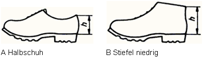
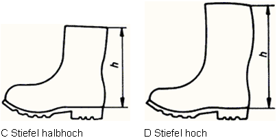
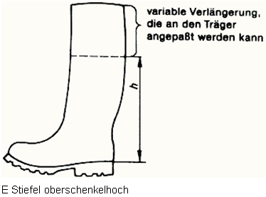
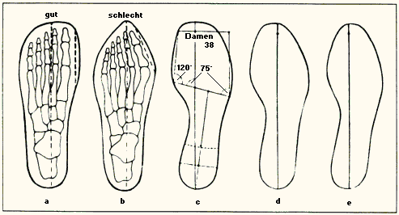
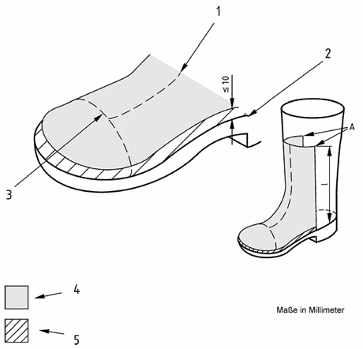
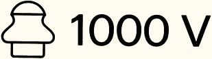

Innerhalb der Schuhausführungen (Sicherheits-, Schutz- und Berufsschuhe) wird nach zwei Klassifizierungsarten unterschieden:
I: Schuhe aus Leder oder anderen Materialien, hergestellt nach herkömmlichen Schuhfertigungsmethoden (z.B. Lederschuhe)
II: Schuhe vollständig geformt oder vulkanisiert (Gummistiefel, Polymerstiefel z.B. aus Polyurethan (PUR) für den Nassbereich).
An alle drei Schuhausführungen werden abhängig von der Klassifizierungsart I oder II gleiche Sicherheitsgrundanforderungen an Obermaterial, Futter, Lasche, Brand und Laufsohle und den kompletten Schuh gestellt.
Die Tabelle 3 zeigt die Kennzeichnungskategorien von Sicherheitsschuhen nach DIN EN ISO 20345. Die Kategorien SB bis S 5 beinhalten die meistverbreiteten Kombinationen von Grund- und Zusatzanforderungen der Klassifizierungsarten*) I und II.
| Kategorie | Grundanforderung | Zusatzanforderung |
| SB | I oder II | |
| S 1 | I | Geschlossener Fersenbereich, Antistatik, Energieaufnahmevermögen im Fersenbereich |
| S 2 | I | Wie S 1, zusätzlich: Wasserdurchtritt, Wasseraufnahme |
| S 3 | I | Wie S 2, zusätzlich: Durchtrittsicherheit, profilierte Laufsohle |
| S 4 | II | Antistatik, Energieaufnahmevermögen im Fersenbereich |
| S 5 | II | Wie S 4, zusätzlich: Durchtrittsicherheit, profilierte Laufsohle |
Tabelle 3: Kategorien von Sicherheitsschuhen
Die in der Tabelle 3 gezeigten Kennzeichnungskategorien von Sicherheitsschuhen erfüllen auch die Anforderungen an Sicherheitsschuhe gemäß den zurückgezogenen Normen (Normen der Reihe DIN EN 345; siehe auch Abschnitt 3.2.3).
Die Tabelle 4 zeigt die Kennzeichnungskategorien von Schutzschuhen nach DIN EN ISO 20345. Die Kategorien PB bis P 5 beinhalten die meistverbreiteten Kombinationen von Grund- und Zusatzanforderungen der Klassifizierungsarten*) I und II.
|
*) Herstellungsarten: I: Schuhe aus Leder oder anderen Materialien, hergestellt nach herkömmlichen Schuhfertigungsmethoden (z.B. Lederschuhe) II: Schuhe vollständig geformt oder vulkanisiert (Gummistiefel, Polymerstiefel z.B. aus Polyurethan (PUR) für den Nassbereich) B Grundanforderungen *) Herstellungsarten: I: Schuhe aus Leder oder anderen Materialien, hergestellt nach herkömmlichen Schuhfertigungsmethoden (z.B. Lederschuhe) II: Schuhe vollständig geformt oder vulkanisiert (Gummistiefel, Polymerstiefel z.B. aus Polyurethan (PUR) für den Nassbereich) B Grundanforderungen |
| Kategorie | Grundanforderung | Zusatzanforderung |
| PB | I oder II | |
| P 1 | I | Geschlossener Fersenbereich, Antistatik, Energieaufnahmevermögen im Fersenbereich |
| P 2 | I | Wie P 1, zusätzlich: Wasserdurchtritt, Wasseraufnahme |
| P 3 | I | Wie P 2, zusätzlich: Durchtrittsicherheit, profilierte Laufsohle |
| P 4 | II | Antistatik, Energieaufnahmevermögen im Fersenbereich |
| P 5 | II | Wie P 4, zusätzlich: Durchtrittsicherheit, profilierte Laufsohle |
Tabelle 4: Kategorien von Schutzschuhen
Die in der Tabelle 4 gezeigten Kennzeichnungskategorien von Schutzschuhen erfüllen auch die Anforderungen an Schutzschuhe gemäß den zurückgezogenen Normen (Normen der Reihe DIN EN 346; siehe, auch Abschnitt 3.2.3).
Die Tabelle 5 zeigt die Kennzeichnungskategorien von Berufsschuhen nach DIN EN ISO 20347. Die Kategorien OB bis O 5 beinhalten die meistverbreiteten Kombinationen von Grund- und Zusatzanforderungen der Klassifizierungsarten*) I und II.
| Kategorie | Grundanforderung | Zusatzanforderung |
| OB | I oder II | |
| O 1 | I | Geschlossener Fersenbereich, Antistatik, Energieaufnahmevermögen im Fersenbereich |
| O 2 | I | Wie S 1, zusätzlich: Wasserdurchtritt, Wasseraufnahme |
| O 3 | I | Wie S 2, zusätzlich: Durchtrittsicherheit, profilierte Laufsohle |
| O 4 | II | Antistatik, Energieaufnahmevermögen im Fersenbereich |
| O 5 | II | Wie S 4, zusätzlich: Durchtrittsicherheit, profilierte Laufsohle |
Tabelle 5: Kategorien von Berufsschuhen
Die in der Tabelle 5 gezeigten Kennzeichnungskategorien von Berufsschuhen erfüllen auch die Anforderungen an Berufsschuhe gemäß den zurückgezogenen Normen (Normen der Reihe DIN EN 347; siehe auch Abschnitt 3.2.3).
|
*) Herstellungsarten: I: Schuhe aus Leder oder anderen Materialien, hergestellt nach herkömmlichen Schuhfertigungsmethoden (z.B. Lederschuhe) II: Schuhe vollständig geformt oder vulkanisiert (Gummistiefel, Polymerstiefel z.B. aus Polyurethan (PUR) für den Nassbereich) B Grundanforderungen |
Die Beispielsammlung ersetzt nicht die Gefährdungsbeurteilung. Sie gibt lediglich eine Empfehlung auf der Basis jahrelanger Erfahrung aus dem Unfallgeschehen der gewerblichen Wirtschaft wieder, in welchen Bereichen ein Sicherheitsschuh mit einer 200-J-Kappe zu tragen ist.
Aus der Gefährdungsbeurteilung können sich gegebenenfalls Abweichungen von der Beispielsammlung ergeben.
| Zuständige Berufsgenossenschaft | Tätigkeitsbereich | Schutzkategorien nach DIN EN ISO 20345*) | |||||
SB |
**) S1 |
**) S2 |
S3 |
**) S4 |
S5 |
||
| Bergbau- und Steinbruchs-BG | Rohbau, Tiefbau- und Straßenbauarbeiten | x | x | ||||
| BG der Bauwirtschaft | Gerüstbauarbeiten | x | x | ||||
| Abbrucharbeiten | x | x | |||||
| Ausbauarbeiten (z.B. Putzer-, Stuck-, Fug-, Fassadenverkleidungs-, Treppenbauarbeiten) | x | x | |||||
| Arbeiten in Beton- und Fertigteilwerken mit Ein- und Ausschalungsarbeiten | x | x | |||||
| Arbeiten auf Bauhöfen und Lagerplätzen | x | x | |||||
| Dacharbeiten | x | x | |||||
| Arbeiten in Betonwerken oder Ein- und Ausschalungsarbeiten, Zement-, Kalk-, Gips- und Mörtelwerken, Transportbetonwerken, Mischanlagen, Kalksandstein- und Porenbetonwerken sowie anderen ortsfesten Betriebsstätten | x | x | |||||
| Arbeiten im Bereich von Aufzügen, Hebezeugen, Kranen, Fördermitteln, Hängebahnen (ausgenommen auf Baustellen) | x | x | |||||
| Be- und Verarbeitung von Natursteinen | x | x | |||||
| Ausbauarbeiten (z.B. Installations-, Ofensetz-, Plattenlegerarbeiten) | x | x | |||||
| Hütten- und Walzwerks-BG Maschinenbau- und Metall-BG Norddeutsche Metall-BG BG Metall Süd |
Bauarbeiten, insbesondere Arbeiten an Stahlbrücken, Stahlhochbauten, Masten, Türmen, Aufzügen, Großbehältern, Großrohrleitungen, Krananlagen, Kessel- und Kraftwerksanlagen, Heizungs-, Lüftungs- und Metallbaumontagen | x | x | ||||
| Arbeiten in Hochofenanlagen, Direktreduktionsanlagen, Stahlwerken, Walzwerken, Metallhütten, Hammer- und Gesenkschmieden, Warmpresswerken, Ziehereien | x | x | |||||
| Arbeiten in Gießereien und Gussputzereien | x | x | |||||
| Hütten- und Walzwerks-BG Maschinenbau- und Metall-BG Norddeutsche Metall-BG BG Metall Süd |
Arbeiten im Schiffbau | x | x | ||||
| Arbeiten im Transport- und Lagerwesen | x | x | |||||
| Arbeiten von Anschlägern im Hebezeugbetrieb | x | x | |||||
| Arbeiten mit und an schweren Lasten (z.B. Bauteile, Werkstücke, Werkzeuge), sofern diese bewegt werden müssen | x | x | |||||
| Arbeiten im Eisenbahnrangierdienst | x | x | |||||
| Gerüstbauarbeiten | x | x | |||||
| Ausbauarbeiten von Rohbauten | x | x | |||||
| Abbrucharbeiten | x | x | |||||
| Dacharbeiten | x | ||||||
| Arbeiten mit/auf heißen Massen (zusätzlich mit wärmeisolierendem Unterbau, Kennzeichnungssymbol H I) | x | ||||||
| BG der keramischen und Glas-Industrie | Rohbau-, Tiefbau- und Straßenbauarbeiten | x | x | ||||
| Gerüstbauarbeiten | x | x | |||||
| Abbrucharbeiten | x | x | |||||
| Ausbauarbeiten | x | x | |||||
| Arbeiten in Beton- und Fertigteilwerken mit Ein- und Ausschalungsarbeiten | x | x | |||||
| Arbeiten auf Bauhöfen und Lagerplätzen | x | x | |||||
| bei Transportarbeiten, auch im Bereich von Aufzügen, Hebezeugen, Kranen, Fördermitteln | x | x | |||||
| Arbeiten in Steinbrüchen, Gräbereien und bei Haldenabtragungen einschließlich Aufbereitung | x | x | |||||
| Ofenbauarbeiten | x | x | |||||
| Be- und Verarbeitung von Steinen | x | x | |||||
| im Produktionsbereich der Flach- und Hohlglasindustrie sowie bei Be- und Verarbeitung von Flach- und Hohlglas | x | x | |||||
| beim Umgang mit Formen in der keramischen Industrie | x | x | |||||
| bei Setz-, Besetz- und Absetzarbeiten im Ofenbereich | x | x | |||||
| bei Formgebungsarbeiten in der grobkeramischen und Baustoff-Industrie | x | x | |||||
| für Betriebshandwerker | x | x | |||||
| BG der Feinmechanik und Elektrotechnik | Rohbau-, Tiefbau und Straßenbauarbeiten | x | x | ||||
| Gerüstbauarbeiten | x | x | |||||
| Abbrucharbeiten | x | x | |||||
| Ausbauarbeiten | x | x | |||||
| Arbeiten in Beton- und Fertigteilwerken mit Ein- und Ausschalungsarbeiten | x | x | |||||
| BG der Feinmechanik und Elektrotechnik | Arbeiten auf Bauhöfen und Lagerplätzen | x | x | ||||
| Arbeiten im Bereich von Aufzügen, Hebezeugen, Kranen, Fördermitteln, Hängebahnen (ausgenommen auf Baustellen) | x | x | |||||
| Ausbauarbeiten, z.B. Installationsarbeiten | x | x | |||||
| Umbau- und Instandhaltungsarbeiten | x | x | |||||
| Arbeiten unter Spannung bis 1000 V | x | ||||||
| Fleischerei-BG | Arbeiten im Transport- und Lagerwesen (z.B. bei Verwendung von Flurförderzeugen) | x | x | ||||
| Transport von und Arbeiten mit Gefrierfleischblöcken und Konservengebinden | x | x | |||||
| Betriebshandwerker bei Metallbaumontagen, Maschinenreparaturen und Kfz-Instandhaltung | x | x | |||||
| LKW-Fahrer mit Be- und Entladeaufgaben | x | ||||||
| Arbeiten in der Schlachtung und Zerlegung | x | ||||||
| Arbeiten in der Verpackung (Berufsschuh mit Kälteisolierendem Unterbau (CI)) | |||||||
| Arbeiten im Fleischereiverkauf (Berufsschuh mit rutschhemmender Sohle) | |||||||
| Großhandels- und Lagerei-BG | beim manuellen Umgang mit schweren Gütern und Gegenständen | x | x | x | |||
| beim Anschlagen und Absetzen von Gütern mit Hebezeugen | x | x | x | ||||
| beim Ab- und Umsetzen von Lasten und Paletten mit Flurförderzeugen, soweit Personen unmittelbar am Lastaufnahmemittel oder der Last tätig werden | x | x | x | ||||
| beim Aufgeben und Abnehmen von Stückgut an Fördereinrichtungen | x | x | x | ||||
| bei Reparaturarbeiten, z.B. an Landmaschinen, Gabelstaplern, Baggern | x | x | x | ||||
| bei Abbrucharbeiten, Bau- und Abbruchstellen | x | x | x | ||||
| bei der Handhabung von Flurförderzeugen und Mitgängerbedienung | x | x | x | ||||
| Holz-BG | bei Arbeiten im Sägewerk | x | x | ||||
| Brennholzschneidereien | x | x | |||||
| Herstellung von Kisten und Paletten | x | ||||||
| Hobelwerke | x | x | |||||
| Furnierwerke | x | x | |||||
| Sperrholzfabriken | x | x | |||||
| Spanplattenwerke | x | x | |||||
| Herstellung von Holzwolle | x | x | |||||
| Karosseriebau | x | x | |||||
| Tischlereien, Schreinereien, Möbelfabriken | x | x | |||||
| Sargherstellung | x | x | |||||
| Holzhaus- und Fertighausbau, Silobau | x | ||||||
| Fenster- und Türenherstellung | x | x | |||||
| auf Baustellen | x | ||||||
| bei Zaunfertigung | x | ||||||
| in der Forstwirtschaft und bei Arbeiten mit Handkettensägemaschinen | x | x | |||||
| Arbeiten während der kalten Jahreszeit im Freien (zusätzlich mit kälteisolierendem Unterbau Symbol C) | x | x | x | ||||
| BG Nahrungsmittel und Gaststätten | Betriebshandwerker z.B. bei Reparaturarbeiten an Maschinen und Geräten, Kfz-Instandhaltung, Bau- und Umbauarbeiten | x | x | ||||
| Arbeiten im Bereich von Aufzügen, Hebezeugen, Kranen, Fördermitteln | x | x | |||||
| Arbeiten im Transport- und Lagerwesen | x | x | |||||
| Arbeiten im Großküchenbereich, z.B. Topfspüle | x | x | |||||
| Arbeiten in Bäckereien, z.B. Teigmacherei | x | x | |||||
| BG der Gas-, Fernwärme und Wasserwirtschaft | Rohrleitungsbau, Rohbau, Tiefbau | x | x | ||||
| Außenarbeiten im Freien, z.B. Kläranlagen, Wasserwerken usw. | x | ||||||
| Arbeiten in Kraftwerken, Fernheizwerken und Wasserwerken (innen) | x | ||||||
| Instandsetzungsarbeiten an Maschinen und Geräten im Regel- und Wartungsbetrieb von Anlagen | x | ||||||
| Arbeiten im Transport und Lagerwesen | x | ||||||
| BG der chemischen Industrie | Verarbeiten von Erdöl und Erdgas | x | x | ||||
| Herstellen von technischen Ölen, Fetten und ähnlichen Produkten | x | x | |||||
| Gewinnen von Harzen, Wachsen, Schwefel, Ölen, Fetten und ähnlichen Produkten durch Extraktion | x | x | |||||
| Herstellen, Verdichten, Verflüssigen sowie Abfüllen von Gasen | x | ||||||
| Herstellen von Folien | x | ||||||
| Herstellen von Chemiefasern | x | x | |||||
| Herstellen und Gewinnen von anorganischen Grundchemikalien | x | x | |||||
| Herstellen von elektro-chemisch oder elektro-thermisch erzeugten Produkten | x | x | |||||
| Herstellen von organisch-chemischen Produkten | x | x | |||||
| Kohleverflüssigung/Kohlevergasung | x | x | |||||
| Herstellung von Ruß, Kohlen und Graphiten für physikalische und chemische Zwecke | x | ||||||
| BG der chemischen Industrie | Herstellen von Gießereihilfsmitteln | x | |||||
| Herstellen von Mineral- und Bleifarben, von Schmelzfarben, von technischen Schleifmitteln und Schleifscheiben mit chemischer Bindung | x | ||||||
| Mahlen von Mineralien | x | ||||||
| Herstellen von Druckfarben, Künstlerfarben, Stofffarben, Tinten und ähnlichen Produkten | x | x | |||||
| Verwerten von Tierkörpern | x | x | |||||
| Vulkanisieren von Transportbändern | x | ||||||
| Arbeiten in Kunststoffrecyclingbetrieben | x | x | |||||
| Herstellen von Gummimischungen | x | x | |||||
| Gummieren von Metallteilen | x | x | |||||
| Vulkanisieren von Gummiprodukten | x | x | |||||
| Herstellen von Faserzementerzeugnissen | x | x | |||||
| Herstellen von Reibbelägen | x | x | |||||
| Destillieren von Teer | x | x | |||||
| Verarbeiten von Teer oder Bitumen | x | x | |||||
| Herstellen von Vergussmasse und Dachbahnen | x | x | |||||
| Arbeiten an Anlagen zum Tablettieren, Verpacken, Abfüllen, Befüllen, Etikettieren und vergleichbaren Tätigkeiten | x | x | |||||
| Herstellen von Anstrichstoffen, Klebstoffen und vergleichbaren Anlagen (z.B. pharmazeutische Anlagen) | x | x | |||||
| Arbeiten in Verbindung mit Schutzanzügen (z.B. mit ätzenden/reizenden Stoffen) | x | x | |||||
| Offener Umgang mit Dampf, Kondensat und heißen Flüssigkeiten sowie Flüssigkeitsstrahlern | x | ||||||
| Arbeiten in Technika | x | ||||||
| Arbeiten in Gefahrstofflägern (auch VbF-Lägern) | x | x | |||||
| BG der Straßen, U-Bahnen und Eisenbahnen | Fahrzeuginstandhaltung | x | x | ||||
| Gleisbauarbeiten | x | ||||||
| Arbeiten an Seilbahn- und Schleppliftanlagen | x | ||||||
| BG für den Einzelhandel | Arbeiten mit dem Flurförderzeug oder in Bereichen, in denen Flurförderzeuge eingesetzt werden oder | x | x | x | |||
| bei manuellem Umgang mit schweren Gütern und/oder Gegenständen oder | x | x | x | ||||
bei häufigen handwerklichen Tätigkeiten z.B.
|
x | x | x | ||||
| BG für Fahrzeughaltungen | Einsammeln von Hausmüll, Sperrmüll, Sondermüll, Wertstoffen | x | x | ||||
| Arbeiten auf Deponien | x | x | |||||
| Arbeiten in Kompostwerken, Wertstoff-Sortieranlagen | x | x | |||||
| Kanalreinigung | x | x | |||||
| Kfz-Instandhaltung, Abschleppdienst | x | x | |||||
| Verladearbeiten von Langholz | x | x | |||||
| Montage- und Betonfertigteilen | x | x | |||||
| Betrieb von gleislosen Fahrzeugkranen | x | x | |||||
| Möbelspedition | x | ||||||
| BG für Gesundheitsdienst und Wohlfahrtspflege zuständiger gesetzlicher Unfallversicherungsträger | Arbeiten im Transport- und Lagerwesen (z.B. bei Verwendung von Flurförderzeugen) | x | |||||
| Haustechnik (z.B. Wartungs- und Reparaturarbeiten) | x | ||||||
| Arbeiten in Großküchen (z.B. Topfspüle) | x | x | |||||
| Rettungsdienst | x | ||||||
| Behandlung und Pflege von Großtieren | x | ||||||
| Arbeiten im OP-Bereich (Berufsschuh) | |||||||
| Pathologie (Berufsschuh mit Zusatzanforderung WRU) | |||||||
| Bettenzentrale, Zentrale Desinfektion (unreine Seite) (Berufsschuh mit Zusatzanforderung WRU) | |||||||
*) siehe Kennzeichnungskategorien



Bild 3: Schuhformen
Die verschiedenen Schuhformen unterscheiden sich insbesondere durch die verschiedenen Schafthöhen "h".
Der Fersenbereich darf bei Sicherheits- und Schutzschuhen der Klassifizierungsart I der Form A (Halbschuh) gemäß den zurückgezogenen Normen der Reihe DIN EN 345 bis Normen der Reihe DIN EN 347 offen sein, beim Berufsschuh darüber hinaus auch die Form B. Dieser Sachverhalt wurde in den aktuellen Normen, den Normen DIN EN ISO 20345 bis DIN EN ISO 20347 verändert. Danach darf der Fersenbereich von Fußschutz der Klassifizierungsart I nur bei der Form A offen sein.
Grundsätzlich wird zwischen Sicherheits-, Schutz und Berufsschuhen unterschieden. Sicherheits- und Schutzschuhe müssen eine Zehenkappe enthalten. Berufsschuhe sind im Normalfall nicht mit Zehenkappen ausgerüstet; ist eine Zehenkappe eingebaut, werden an diese keine Anforderungen gestellt.
Die Sicherheitsschuhe unterscheiden sich von den Schutzschuhen dadurch, dass die Zehenkappen die doppelten Prüfenergien und eine wesentlich größere Druckkraft aufzunehmen haben.
Innerhalb der drei Schuhausführungen wird nach zwei Klassifizierungsarten unterschieden.
Jeder Fußschutz muss die Grundanforderungen (siehe Tabellen 7 und 8) erfüllen. Bei Schuhen die mehreren Zusatzanforderungen (siehe Tabelle 9) genügen, ist die Kennzeichnung mit den einzelnen Kennzeichnungssymbolen für den Schuhhersteller aus Platzgründen zu schwierig und wäre für den Verbraucher zu umfangreich und unübersichtlich. Deshalb sind in den Normen DIN EN ISO 20345 bis Normen DIN EN ISO 20347 die meistbenutzten Kombinationen der sicherheitsrelevanten Grund- und Zusatzanforderungen zusammengefasst und Kurzzeichen für die Kennzeichnung entsprechend der Klassifizierungsarten eingeführt worden (siehe Tabelle 6).
| Eigenschaft | Kurzzeichen für die Kennzeichnung von | |||||||
| (Merkmal) | Sicherheitsschuhen: S Schutzschuhen: P Berufsschuhen: O |
SB PB - |
S1 P1 O1 |
S2 P2 O2 |
S3 P3 O3 |
S4 P4 O4 |
S5 P5 O5 |
|
| • | Grundanforderungen | I/II | I | I | I | II | II | |
| • | Geschlossener Fersenbereich | I | I | I | **) | **) | ||
| • | Kraftstoffbeständigkeit Laufsohle | *) | *) | *) | *) | *) | ||
| • | Antistatische Eigenschaften | I | I | I | II | II | ||
| • | Energieaufnahme im Fersenbereich | I | I | I | II | II | ||
| • | Wasserdurchtritt/-aufnahme | I | I | |||||
| • | Durchtrittsicherheit | I | II | |||||
| • | Profilierte Laufsohle | I | II | |||||
| I Schuhe aus Leder oder anderen Materialien, hergestellt nach herkömmlichen Schuhfertigungsmethoden (z.B. Lederschuhe) II Schuhe vollständig geformt oder vulkanisiert (Gummistiefel, Polymerstiefel z.B. aus Polyurethan (PUR) für den Nassbereich) B Grundanforderungen *) Nur bei Berufsschuhen; bei Sicherheits- und Schutzschuhen in Grundanforderungen enthalten. **) Forderung bauartbedingt erfüllt. Symbole für die Eigenschaften siehe Tabelle 8 |
Tabelle 6: Kurzzeichen für die Kennzeichnung der meistbenutzten Kombinationen von sicherheitsrelevanten Grund- und Zusatzanforderungen
Im Vergleich mit den zurückgezogenen Normen der Reihe DIN EN 345 bis Normen der Reihe DIN EN 347 haben sich die Kurzzeichen nicht verändert.
Aus dieser Tabelle kann - entsprechend der ermittelten Anforderungen aus der Gefährdungsbeurteilung - der geeignete Schuh ausgewählt werden.
Sicherheitsschuhe mit der Kennzeichnung S3 sind z.B. Lederschuhe (Klassifizierungsart I) mit einer direkt angespritzten vulkanisierten oder geklebten Laufsohle mit den folgenden Eigenschaften:
Branchenspezifische Vorschläge für die Auswahl von geeignetem Fußschutz sind in Abschnitt 2 dieses Anhanges zusammengestellt.
Detailinformationen zu den Schuhausführungen, dem Schuhaufbau und den Zusatzanforderungen finden sich in den nachfolgenden Übersichten.
An alle drei Schuhausführungen - abhängig von der Klassifizierungsart (siehe Abschnitt 1 dieses Anhanges) - werden die gleichen sicherheitsrelevanten Grundanforderungen gestellt: an den kompletten Schuh, das Schuhoberteil, das Futter, die Lasche, die Brand- und die Laufsohle (siehe Tabelle 7). Für eine vergleichende Betrachtung sind in der Tabelle 7 die Grundanforderungen nach den bis August 2005 gültigen Normen der Reihe DIN EN 345 bis Normen der Reihe DIN EN 347 und den Nachfolgenormen DIN EN ISO 20345 bis DIN EN ISO 20347 aufgeführt.
| Sicherheitsrelevante Grundanforderungen | Normen der Reihe EN 345 bis Normen der Reihe EN 347 | DIN EN ISO 20345 bis DIN EN ISO 20347 | ||
| Klassifizierungsart | Klassifizierungsart | |||
| I | II | I | II | |
| Kompletter Schuh | ||||
| - Schuhformen (nach Bild 3) | x | x | x | x |
| - Fersenbereich: Form A | x | x | ||
| Fersenbereich: Formen B,C,D,E | x 1) | x | x | x |
| - Konstruktion | x | x | ||
| - Trennkraft zwischen Schaft und Unterbau | x | x | ||
| - Zehenschutz | x 2) | x 2) | x 2) | x 2) |
| - Dichtheit | x | x | ||
| - Spezifische ergonomische Merkmale | x | x | ||
| Schuhoberteil | ||||
| - Allgemeines (z.B. Kragen oder Einsätze) | x | x | ||
| - Reißkraft | x | x | ||
| - Dicke | x | x | ||
| - Festigkeit | x | x | x | x |
| - Biegeverhalten | x | x | ||
| - Wasserdampf-Durchlässigkeit und -Zahl | x | x | ||
| - pH-Wert | x | x | ||
| - Hydrolyse | x | x | ||
| - Chrom VI -Gehalt | x | |||
| Blattfutter / Quartierfutter | ||||
| - Reißkraft | x | x | ||
| - Abriebwiderstand | x | x | ||
| - Wasserdampf-Durchlässigkeit und -Zahl | x | x | ||
| - pH-Wert | x | x | ||
| - Chrom VI -Gehalt | x | |||
| Lasche | ||||
| - Reißkraft | x | x | ||
| - pH-Wert | x | x | ||
| - Chrom VI -Gehalt | x | |||
| Brandsohle | ||||
| - Dicke | x | Spezielle Anforderungen siehe Tabelle 8 | ||
| - pH-Wert | x | |||
| - Wasseraufnahme und -abgabe | x | |||
| - Abriebwiderstand | x | |||
| Laufsohle | ||||
| - Dicke | x | x | x | x |
| - Reißkraft | x | x | ||
| - Abriebwiderstand | x | x | x | x |
| - Biegeverhalten | x | x | x | x |
| - Hydrolyse | x | x | x | x |
| - Trennkraft zwischen den Schichten | x | x | x | x |
| - Kraftstoffbeständigkeit | x 2) | x 2) | x 2) | x 2) |
| Das Fehlen von X bedeutet, dass keine Anforderungen bestehen. Die im Vergleich zwischen den aktuellen mit den zurückgezogenen Normen des Fußschutzes vorhandenen neuen Anforderungen sind farblich markiert. 1) Der Fersenbereich darf beim Berufsschuh der Form A und B offen sein 2) Außer Berufsschuhe |
||||
Tabelle 7: Sicherheitsrelevante Grundanforderungen an Fußschutz der Klassifizierungsarten I und II nach den zurückgezogenen und den derzeit gültigen harmonisierten Normen
In den derzeit gültigen harmonisierten Normen muss die Brandsohle und/oder die Einlegesohle bzw. Deckbrandsohle folgende Grundanforderungen erfüllen:
| Schuhaufbau | Prüfung | Anforderungen | ||||||
| Dicke | pH-Wert | Wasser -auf- nahme und -ab- gabe |
Abrieb | Chrom IV | ||||
| Brand- sohle |
Deck- sohle |
|||||||
| 1 | Keine Brandsohle oder eine Brand -sohle, die die Anforderun -gen nicht erfüllt |
Nicht herausnehmbare Einlegesohle erforderlich | Einlegesohle | x | x | x | x | |
| 2 | Brandsohle | Keine Einlegesohle aber Fersendecksohle | Brandsohle | x | x | x | x | |
| 3 | Vollständige, nicht herausnehmbare Deckbrandsohle | Deckbrand und Brandsohle | x | x | x | |||
| Deckbrandsohle | x | x | x | |||||
| 4 | Vollständige, herausnehmbare Einlegesohle, wasserdurchlässig 1 | Brandsohle | x | x | x | x | ||
| Einlegesohle | x | x | x | |||||
| 5 | Vollständige, herausnehmbare Einlegesohle, wasserundurchlässig 2 | Brandsohle | x | x | x | x | ||
| Einlegesohle | x | x | x | x | ||||
| X bedeutet, dass die Anforderung erfüllt sein muss. Die Anforderungen an den pH-Wert und an Chrom VI gelten nur für Leder. 1) Wasserdurchlässig bedeutet, dass bei der Prüfung nach Abschnitt 7.2 der DIN EN ISO 20344 die Einlegesohle das Wasser nach 60 s oder eher durchlässt. |
||||||||
Tabelle 8: Grundanforderungen für Brandsohlen und / oder Einlegesohlen
Neben den Grundanforderungen können an alle Schuhausführungen - ebenfalls abhängig von der Klassifizierungsart - Zusatzanforderungen gestellt werden. Erfüllt ein Fußschutz eine solche zusätzliche Anforderung, so ist er mit dem entsprechenden Symbol gekennzeichnet (siehe Tabelle 9). Für eine vergleichende Betrachtung sind in der Tabelle die Zusatzanforderungen nach den bis August 2005 gültigen Normen der Reihe DIN EN 345 bis Normen der Reihe DIN EN 347 und DIN EN ISO 20345 bis DIN EN ISO 20347 aufgeführt.
| Zusatzanforderungen *) | Symbol | Normen der Reihe EN 345 bis Normen der Reihe EN 347 | DIN EN ISO 20345 bis DIN EN ISO 20347 | ||
| Klassifizierungsart | Klassifizierungsart | ||||
| I | II | I | II | ||
| Kompletter Schuh | |||||
| Durchtrittsicherheit | P | x | x | x | x |
| Elektrischer Durchgangswiderstand | |||||
| - Leitfähige Schuhe | C | x | x | x | x |
| - Antistatische Schuhe | A | x | x | x | x |
| - Elektrisch isolierende Schuhe | I | x | |||
| Wärme- und Kälteisolierung | |||||
| - Wärmeisolierung | HI | x | x | x | x |
| - Kälteisolierung | CI | x | x | x | x |
| Energieaufnahmevermögen im Fersenbereich | E | x | x | x | x |
| Wasserdichtheit | WR | x | x | ||
| Mittelfußschutz | M | x 1A) | x 1A) | x 1A) | x 1A) |
| Knöchelschutz | AN | x | x | ||
| Schuhoberteil | |||||
| Wasserdurchtritt und aufnahme | WRU | x | x | ||
| Konstruktion (z.B. Verzicht auf Ziernähte) | x | ||||
| Schnittschutz | CR | x 1 B) | x 1 B) | x 1 B) | x 1 B) |
| Laufsohle | |||||
| Profilierte Laufsohle | |||||
| - profilierte Flächen | x | x | x | x | |
| - Dicke | x | x | x | x | |
| - Profilhöhe | x | x | x | x | |
| Verhalten gegenüber Kontaktwärme | HRO | x | x | x | x |
| Kraftstoffbeständigkeit | ORO | x 2) | x 2) | ||
| FO | x 2) | x 2) | |||
| X bedeutet, dass die Anforderung aus dem entsprechenden Abschnitt der Norm erfüllt sein muss. Die im Vergleich zwischen den aktuellen mit den zurückgezogenen Normen des Fußschutzes vorhandenen neuen Anforderungen sind farblich markiert. *) Berufsschuhe müssen neben den sicherheitsrelevanten Grundanforderungen zusätzlich mindestens eine der sicherheitsrelevanten Zusatzanforderungen nach dieser Tabelle erfüllen. 1A) Anforderung gilt nicht für Berufsschuhe nach den Normen der Reihe DIN EN 347 bzw. DIN EN ISO 20347. 1B) Anforderung gilt nicht für Berufsschuhe nach den Normen der Reihe DIN EN 347 bzw. DIN EN ISO 20347 und nicht für Schuhe der Formen A und B. 2) Anforderung gilt nur für Berufsschuhe nach den Normen der Reihe DIN EN 347 bzw. DIN EN ISO 20347. |
|||||
Tabelle 9: Zusatzanforderungen für besondere Anwendungen mit entsprechenden Symbolen für die Kennzeichnung in Abhängigkeit der Klassifizierungsart nach den zurückgezogenen und den derzeit gültigen harmonisierten Normen
Um aufwändiges Anprobieren zu vermeiden und ein genaues und leichtes Anpassen der Schuhe zu erreichen, ist ein Maßsystem notwendig, das über eine einfache einmalige Fußvermessung zur richtigen Schuhgröße in Länge und Breite führt, dem MondopointSystem.
Dieses Mondopoint-System geht nicht wie bisher von der Schuhgröße aus, sondern von zwei in Millimeter gemessenen markanten Maßen des bekleideten Fußes, seiner Länge und seiner größten Breite. Die Fußbreite steht in einem bestimmten Verhältnis zum Ballenumfang und damit zur Fußweite.
In einem Forschungsprojekt der Bundesanstalt für Arbeitsschutz und Arbeitsmedizin in Dortmund (BAU Fb 476) zur Entwicklung eines fußgerechten Schuhleistens wurde festgestellt, dass ohne besondere Schwierigkeiten für die Schuhanpassung vier Weiten bei einem Längensprung von 7,5 mm (Längensprung R 2 nach DIN 66074) ausreichend sind. Zur individuellen Anpassung von Schuhen ist die Vermessung der Füße erforderlich (siehe Bild 4).
Bild 4: Vermessen des bekleideten Fußes nach Länge und größter Breite mit einem einfachen Messgerät
Da das Fußvolumen im Laufe des Tages zunehmen kann, ist die Fußmessung grundsätzlich nach der täglichen Arbeit vorzunehmen. Des Weiteren müssen Länge und größte Breite sowohl am linken als auch am rechten Fuß ermittelt werden, weil meist Unterschiede zwischen den Maßen des rechten und des linken Fußes bestehen.
Beispiel:
Rechter Fuß: Länge 272 mm, Breite 99 mm
Linker Fuß: Länge 268 mm, Breite 101 mm
Zu Grunde zu legen sind demnach
für die Länge 272 mm,
für die Breite 101 mm.
Aus der nachstehenden Tabelle 10 "Fußmaße" ergibt sich anhand dieser Fußmaße die Schuhgröße 270/100 oder 270/Breite 9.
Länge und Breite des Fußes sagen noch nichts über seine Form aus. Die Leisten weichen in ihrer Form von Hersteller zu Hersteller mehr oder weniger voneinander ab. Deshalb ist zur Ergänzung des Maßsystems diejenige Leistenform als Grundleisten zu finden, die einen möglichst großen Teil der individuellen Fußformen abdeckt.
Grundlage für einen gut passenden Schuh ist der feste Halt des Fußes im Ballen- und Fersenbereich (Kugelferse). Im Vorschuh, also unter der Zehenkappe, müssen die Zehen ausreichend Platz für eine ungehinderte Beweglichkeit finden.
Neben der Optimierung des Brandsohlenumrisses ist auch eine anatomisch richtige Gestaltung der Aufstandsfläche des Fußes zu berücksichtigen (siehe Bild 5).

Bild 5: Brandsohlenformen
Die Brandsohle ist die Grundlage für den Schuhleisten. Das Bild 5 zeigt die unterschiedlichen Brandsohlenformen trotz gleicher Länge und gleicher Breite. Hierbei sind die Formen c und d fußgerechter als die Form e.
Die im Auftrag der Bundesanstalt für Arbeitsschutz und Arbeitsmedizin (BAuA) durchgeführten Entwicklungsarbeiten für einen Grundleisten sind im Forschungsbericht Fb 476 veröffentlicht. Die über diesen Grundleisten in vier Weiten hergestellten Schuhe ergaben im Tragetest eine sehr gute Übereinstimmung zwischen den ermittelten Fußmaßen und dem Sitz der entsprechend zugeteilten Schuhe.
Angeboten werden von mehreren Schuhherstellern Schuhe dieses Maßsystems, wobei Bezeichnungen wie "Naturform" oder "Mondopoint" benutzt werden.
| Fußlänge | Fußbreite (mm) Weitenbezeichnung (Code) | |||||
| 7 | 8 | 9 | 10 | 11 | 12 | |
| 217 | 80 | 83 | 85 | 88 | 91 | 94 |
| 225 | 82 | 85 | 88 | 90 | 93 | 96 |
| 232 | 84 | 87 | 90 | 92 | 95 | 98 |
| 240 | 86 | 89 | 92 | 95 | 97 | 100 |
| 247 | 88 | 91 | 94 | 97 | 99 | 102 |
| 255 | 90 | 93 | 96 | 99 | 102 | 105 |
| 262 | 92 | 95 | 98 | 101 | 104 | 107 |
| 270 | 94 | 97 | 100 | 103 | 106 | 109 |
| 277 | 96 | 99 | 102 | 105 | 108 | 111 |
| 285 | 99 | 101 | 104 | 107 | 110 | 113 |
| 292 | 101 | 104 | 106 | 109 | 112 | 115 |
| 300 | 103 | 106 | 108 | 112 | 114 | 117 |
| 307 | 105 | 108 | 111 | 114 | 117 | 120 |
| 315 | 107 | 110 | 113 | 116 | 119 | 122 |
| 322 | 109 | 112 | 115 | 118 | 121 | 124 |
| 330 | 111 | 114 | 117 | 120 | 123 | 126 |
Tabelle 10: Fußmaße
Gemäß den neuen harmonisierten Normen, z.B. DIN EN ISO 20345 bis DIN EN ISO 20347, werden beim Fußschutz spezifische ergonomische Merkmale in einem Trageversuch beurteilt. Dieser beinhaltet typische Tätigkeiten beim normalen Gebrauch der Schuhe wie Gehen, Treppensteigen und Hinknien.
Werden Arbeiten in kniender Tätigkeit ausgeführt, z.B. bei Bodenlegern, Schweißern, Schlossern, sollten insbesondere die Ergebnisse aus dem Trageversuch "Hinknien" bei der Auswahl von geeignetem Fußschutz berücksichtigt werden. Auskunft erteilen die Schuhhersteller.
Schuhe für lose Einlagen sind für Personen gedacht, die orthopädische Einlagen tragen müssen und für die daher normale Sicherheits-, Schutz- oder Berufsschuhe nicht geeignet sind. Meist besteht aber noch kein Anspruch auf orthopädisches Schuhwerk. Mehrere Schuhhersteller bieten deshalb zertifizierte Schuhe zusammen mit entsprechenden Einlagen an, die orthopädisch individuell anzupassen sind. Die Verwendung anderer als der vom Schuhhersteller angebotenen Schuheinlagen ist unzulässig, weil der Schuh gegenüber dem geprüften Baumuster verändert wird. Beispielsweise könnte durch solche Einlagen die erforderliche Resthöhe unter der Zehenkappe oder die elektrische Leitfähigkeit beeinträchtigt werden.
Bei orthopädischem Fußschutz ist zu unterscheiden, ob es sich um
Bei der Auswahl des geeigneten orthopädischen Fußschutzes sind auf Grundlage der medizinischen Erfordernisse auch wirtschaftliche Aspekte zu berücksichtigen. Hieraus könnte sich ergeben, dass bereits mit orthopädischen Zurichtungen das Ziel der Berufsfähigkeit wirksam erreicht werden kann.
Werden orthopädische Schuhe oder Zurichtungen in Bereichen getragen, in denen die Benutzung von Fußschutz erforderlich ist, müssen auch die orthopädischen Schuhe oder Zurichtungen als Fußschutz hergestellt worden sein. Fußschutz fällt unter die Achte Verordnung zum Geräte- und Produktsicherheitsgesetz (8. GPSGV) und ist der Kategorie II zugeordnet. Das heißt, dass auch für jeden orthopädischen Fußschutz eine EG-Baumusterprüfbescheinigung vorliegen muss. Erst auf dieser Grundlage ist derjenige, der die Produkte in den Verkehr bringt, berechtigt, die CE-Kennzeichnung anzubringen.
Inverkehrbringer könnten z.B. sein: Hersteller von orthopädischen Schuhen.
Im Allgemeinen wird Fußschutz nach den harmonisierten Normen geprüft. Wird die entsprechende Norm eingehalten, ist davon auszugehen, dass der Fußschutz mit den grundlegenden Sicherheits- und Gesundheitsschutzanforderungen der Achten Verordnung zum Geräte- und Produktsicherheitsgesetz (8. GPSGV) übereinstimmt. Somit kann die EG-Baumusterprüfbescheinigung erteilt werden. Für die normkonforme Prüfung von Fußschutz werden mehrere Prüfmuster benötigt, die zum größten Teil einer zerstörenden Prüfung unterzogen werden. Weil orthopädischer Fußschutz zur Benutzung durch eine bestimmte Person vorgesehen ist, d.h. nur ein Paar Schuhe hergestellt wird, sind die zerstörenden Prüfungen somit nicht angemessen.
Der Schuhhersteller konzipiert eine Herstelleranweisung (Fertigungsanweisung) und fertigt danach für das Baumusterprüfverfahren Prototypen orthopädischen Fußschutzes. Diese Schuhe werden mit allen erforderlichen Unterlagen (z.B. technische Dokumentation, Materialbeschreibung und Herstellerinformation) von einer akkreditierten und notifizierten Prüfstelle auf Übereinstimmung mit der Achten Verordnung zum Geräte- und Produktsicherheitsgesetz (8. GPSGV) geprüft (Baumusterprüfung).
Die Fertigungsanweisung ist zwingend einzuhalten; sie enthält neben verfahrenstechnischen Anweisungen auch Materialvorgaben für die Schuhherstellung.
Nach Erteilung der EG-Baumusterprüfbescheinigung durch eine notifizierte Stelle kann mit der Erlaubnis des Schuhherstellers jeder einschlägig orthopädisch qualifizierte Hersteller den orthopädischen Fußschutz individuell herstellen oder zurichten, sofern er entsprechend der Fertigungsanweisung arbeitet. Mit der CE-Kennzeichnung erklärt er abschließend eigenverantwortlich, dass der Schuh auf der Grundlage des Prüfmusters gefertigt wurde. Der Schuh wird darüber hinaus entsprechend der Norm gekennzeichnet und die Herstellerinformation wird beigefügt.
Tabelle 11 zeigt typische Anwendungen und Anwendungsgrenzen von orthopädischen Zurichtungen an Fußschutz.
| Typische orthopädische Zurichtungen | Übliche Maße | |
| Ausgleichsbettung und Stufenbettung |
Ausgleichsbettung | bis ca. 0,5 cm |
| Stufenbettung | bis ca. 0,5 cm vorn und ca. 1,0 cm hinten |
|
| Laufsohle und Rollen | Schuherhöhung | ca. 1,0 cm bis 3,0 cm |
| Innen- und Außenrand-erhöhungen | ca. 0,3 cm bis 0,8 cm | |
| Orthopädische Abrollhilfen | ca.0,6 cm bis 1,5 cm | |
| Besondere Maßnahmen am Schuhboden | Schuhbodenversteifung | bis ca. 0,5 cm |
| Schuhbodenverbreiterung | ||
| Absatz | Erhöhter Absatz | ca. 0,5 cm bis 3 cm |
| Lateral oder medial versetzter Absatz | bis ca. 0,8 cm | |
| Schaft mit Kappe und | Schaftversteifung | |
| Lasche | Laschenversteifung | |
| Polsterung/Knöchel/Lasche | ||
Tabelle 11: Typische orthopädische Zurichtungen
Zum Reinigen und Entrosten von Behältern, Räumen und Flächen werden Flüssigkeitsstrahler als handgeführte Spritzeinrichtungen (Lanzen) mit Drücken > 250 bar verwendet.
In der Praxis werden solche Geräte mit Drücken zwischen 800 und 2500 bar betrieben. Damit verbunden ist eine erhöhte Gefahr von Fußverletzungen, wenn der Hochdruckstrahl unbeabsichtigt über den Fuß geführt wird.
Werden handgehaltene Spritzeinrichtungen notwendig, muss die Lanzenlänge mehr als 0,75 m betragen, um eine Berührung mit dem Fuß nach Möglichkeit auszuschließen.
Müssen aus arbeitstechnischen Gründen, z.B. enge Räume, schmale Gerüste, kürzere Lanzen eingesetzt werden, wird es erforderlich, Fußschutz, z.B. Sicherheitsschuh mit Kurzzeichen "S 5", mit zusätzlicher Schutzfunktion im oberen Fußbereich zu tragen. Es wäre auch möglich, die Schutzfunktion über eine entsprechende Gamasche zu erreichen, die über einem passenden Fußschutz getragen wird. (siehe auch Anhang 5: Prüfgrundsätze für Gamaschen als Schutz bei Arbeiten mit handgeführten Spritzeinrichtungen).
Unter den folgenden Prüfbedingungen muss die Schutzfunktion des Fußschutzes bzw. der Gamasche und des Fußschutzes erhalten bleiben:
Anforderungen an Sicherheitsschuhe zum Schutz gegen Schnitte durch handgeführte Kettensägen sind in der DIN EN ISO 17249 "Sicherheitsschuhe mit Schutz gegen Kettensägenschnitte" beschrieben.
Die DIN EN ISO 17249 ist im Dezember 2004 erschienen. Darin ist unter anderem festgelegt, dass für eine Übergangszeit bis Ende August 2005 die Prüfungen und Zertifizierungen nach den bisher gültigen Normen der Reihe DIN EN 344 bis Normen der Reihe DIN EN 345 durchgeführt werden dürfen. Die Hersteller können jedoch Fußschutz unabhängig von der Übergangszeit gemäß den bisherigen Normen in Verkehr bringen, wenn die rechtlichen Voraussetzungen erfüllt sind. Die Schuhe sind bis auf die Nummer der europäischen Norm (z.B. EN 345) analog gekennzeichnet.
Sicherheitsschuhe mit Schutz gegen Kettensägenschnitte erfüllen einerseits die Anforderungen an "Sicherheitsschuhe" und bieten andererseits den Benutzern der Schuhe einen Schutz gegen Schnitte durch die Kettensäge. Der Schutzbereich muss durchgehend sein und den Blatt-, Laschen- und Zehenbereich des Schuhs abdecken (siehe Bild 6).

Legende
1 Mittellinie des Schuhs
2 Ablasskante
3 Hinterkante der Zehenkappe
4 Schutzbereich
5 Zusätzlicher Schutzbereich für Schuhe mit Schutzniveau 3 oder 4
Bild 6: Mindestschutzbereich für Schuhe mit Schutz gegen Kettensägenschnitte nach DIN ISO 17249
Das Schutzmaterial muss dauerhaft am Schuh befestigt sein. In Abhängigkeit zu der Kettengeschwindigkeit gibt es unterschiedliche Schutzniveaus (siehe Tabelle 12).
| Schutzniveau | Kettengeschwindigkeit (m/s) |
| 1 | 20 |
| 2 | 24 |
| 3 | 28 |
| 4 | 32 |
Tabelle 12: Schutzniveau in Abhängigkeit der Kettengeschwindigkeit
Sicherheitsschuhe mit Schutz gegen Kettensägenschnitte sind nur in den Formen C (halbhohe Stiefel), D (hohe Stiefel) und E (oberschenkelhohe Stiefel) zulässig. Sie werden zusätzlich mit einem Piktogramm gekennzeichnet, das eine Kettensäge darstellt.
Im Vergleich mit den zurückgezogenen Normen ist in der DIN EN ISO 17249 unter anderem
Siehe auch Abschnitt 4.3.23 "Schutzkleidung für den Umgang mit Kettensägen" in der BG-Regel "Einsatz von Schutzkleidung" (BGR 189)
Elektrisch isolierende Schuhe zum Arbeiten an unter Spannung stehenden Teilen elektrischer Anlagen oder in deren Nähe sollen - in Verbindung mit anderen elektrisch isolierenden persönlichen Schutzausrüstungen - den Träger unter anderem gegen elektrische Schocks schützen und eine gefährliche Körperdurchströmung über die Füße verhindern.
In Abhängigkeit von der Nennspannung der Teile, an denen Arbeiten unter Spannung oder Arbeiten in der Nähe unter Spannung stehender Teile durchgeführt werden, ist zwischen isolierenden Schuhen zu unterscheiden der
Die Schuhe müssen einerseits elektrische (Wechselspannungsprüfung, Stehspannungsprüfung) und andererseits nicht elektrische Anforderungen erfüllen.
Fußschutz nach den Normen DIN EN ISO 20345 bis DIN EN ISO 20347 sind mit dem Symbol I gekennzeichnet.
Demgegenüber ist elektrisch isolierender Fußschutz nach DIN EN 50321 (VDE 0682 331) ergänzend zur Kennzeichnung des Fußschutzes gemäß den zurückgezogenen Normen der Reihe DIN EN 345 bis Normen der Reihe DIN EN 347 dauerhaft und gut sichtbar auf der Außenseite
Weiterhin sind in der Kennzeichnung die erste Benutzung, das Datum der Prüfung oder das Datum der Wiederholungsprüfung anzugeben.

Bild 7: Kennzeichnung von elektrisch isolierenden Schuhen für Arbeiten an Niederspannungsanlagen
Benötigt der Versicherte orthopädische Schuhe, so müssen auch die am Arbeitsplatz für ihn erforderlichen Sicherheits-, Schutz- und Berufsschuhe orthopädisch gestaltet sein und die erforderlichen Schutzausrüstungen besitzen. Da derartige Schuhe dem jeweiligen Benutzer individuell angepasst werden müssen (Einzelanfertigungen), entstehen z.B. gegenüber üblichen Sicherheitsschuhen erhöhte Kosten, die vom Unternehmer nicht allein übernommen werden müssen.
In der nachfolgenden Übersicht über die Regelung der Kostenübernahme für orthopädischen Fußschutz sind die Voraussetzungen für die Kostenübernahme und die jeweils gültigen Rechtsgrundlagen für verschiedene Kostenträger zusammengestellt. Wichtig ist, dass der Versicherte auf das Tragen von Sicherheits-, Schutz- oder Berufsschuhen angewiesen ist.
Orthopädischer Fußschutz ist leistungsrechtlich dem Bereich der beruflichen Rehabilitation zuzuordnen. Die Kosten werden von den Trägern der beruflichen Rehabilitation und Teilhabe behinderter Menschen am Arbeitsleben, nämlich den Trägern der gesetzlichen Unfallversicherung, den Trägern der gesetzlichen Rentenversicherung, der Bundesagentur für Arbeit, den Trägern der Kriegsopferversorgung und Kriegsopferfürsorge, den Integrationsämtern - in ihrer Eigenschaft als Träger der begleitenden Hilfe im Arbeitsleben nach dem Schwerbehindertenrecht - sowie von den Trägern der Sozialhilfe übernommen. Die Träger der beruflichen Rehabilitation lassen sich in der Regel von den Arbeitgebern den Anteil ersetzen, der z.B. auf normale Sicherheitsschuhe (entsprechend z.B. DIN EN ISO 20345) oder Schutzschuhe (entsprechend z.B. der DIN EN ISO 20346) entfallen würde. Diese Regelung gilt sowohl für die Erst- als auch für die Ersatzbeschaffungen. Ein Zeitraum, nach dem frühestens nach der Erstbeschaffung die Leistung für ein neues Paar Schuhe übernommen wird, ist von den Kostenträgern nicht mehr festgelegt; die Leistungen werden nach Bedarf erbracht. Vereinbarungsgemäß (Gesamtvereinbarung über die Beteiligung der Bundesanstalt für Arbeit bei beruflicher Rehabilitation vom 1. April 1977) veranlasst der jeweilige Rehabilitationsträger die Beteiligung der für den Wohnort des Behinderten zuständigen Arbeitsagentur, wenn erkennbar ist, dass eine berufsfördernde Maßnahme zur Rehabilitation erforderlich ist.
Zuständig sind folgende Leistungsträger:
1. Gesetzliche Unfallversicherungsträger
(z.B. Berufsgenossenschaft, Eigenunfallversicherung)
| Voraussetzung: | Fußschädigung als Folge eines Arbeitsunfalles (§§ 8, 10, 11, 12 SGB VII) einschließlich eines Unfalles auf dem Wege von und zur Arbeit oder einer Berufskrankheit (§ 9 SGB VII). | |
| Leistungsträger: | Träger der gesetzlichen Unfallversicherung z.B.
|
Rechtsgrundlage: §§ 26, 35 SGB VII -Gesetzliche Unfallversicherung-
2. Träger der Kriegsopferversorgung und -fürsorge
| Voraussetzung: | Fußschädigung durch militärische oder militärähnliche Dienstverrichtungen, durch Kriegseinwirkung, Kriegsgefangenschaft oder Internierung, durch Ausübung des Wehrdienstes oder des Zivildienstes. Kein Anspruch auf Leistungen nach Nummer 1. |
|
| Leistungsträger: | Hauptfürsorgestellen, Landesversorgungsämter und Versorgungsämter sowie örtliche Fürsorgestellen unter anderem mit dem Ziel, die Erwerbsfähigkeit entsprechend der Leistungsfähigkeit zu erhalten, zu bessern, herzustellen oder wiederherzustellen. | |
| Rechtsgrundlage: | § 25 Abs. 1, § 25a Abs. 1, § 26 Abs. 1 Bundesversorgungsgesetz (BVG). |
3. Gesetzliche Rentenversicherung
| Voraussetzung: | Die persönlichen Voraussetzungen für Leistungen zur Rehabilitation sind erfüllt, wenn die Erwerbstätigkeit wegen körperlicher Behinderung erheblich gefährdet oder gemindert ist und durch Leistung der Rehabilitation eine Minderung der Erwerbsfähigkeit abgewendet oder bei bereits eingetretener Minderung der Erwerbsfähigkeit diese wesentlich gebessert oder wiederhergestellt werden kann oder der Eintritt von Berufsunfähigkeit oder Erwerbsunfähigkeit abgewendet werden kann. Weitere versicherungsrechtliche Voraussetzungen sind, wenn bei Antragstellung 1. eine Wartezeit von 15 Jahren erfüllt ist oder 2. eine Rente wegen verminderter Erwerbsfähigkeit bezogen wird. Berufsfördernde Leistungen zur Rehabilitation werden auch erbracht, wenn ohne diese Leistungen Rente wegen verminderter Erwerbsfähigkeit zu leisten wäre oder wenn für eine erforderliche Rehabilitation im unmittelbaren Anschluss eine medizinische Leistung der Rentenversicherungsträger berufsfördernde Leistungen erforderlich sind. Kein Anspruch auf Leistungen nach Nummer 1 oder 2. |
|
| Leistungsträger |
|
|
| Rechtsgrundlage: | §§ 9, 10, 11, 16 SGB VI (2. Kapitel, 1. Abschnitt) Gesetzliche Rentenversicherung- | |
| Anmerkung: | Von den anfallenden Gesamtkosten ist der Betrag abzuziehen, den der Arbeitgeber für Fußschutz ohne orthopädische Ausstattung zu tragen hat. |
4. Bundesagentur für Arbeit
| Voraussetzung: | Angeborene oder erworbene Fußbehinderung. Kein Anspruch auf Leistungen nach Nummern 1 bis 3. | |
| Leistungsträger: | Bundesagentur für Arbeit Zu beantragen sind Hilfsmittel (hier: z.B. orthopädischer Fußschutz) zur Teilhabe am Arbeitsleben bei der Arbeitsagentur, in deren Bezirk der Antragsteller wohnt. |
|
| Rechtsgrundlage: | §§ 5, 6, 33, 34 SGB IX -Rehabilitation und Teilhabe behinderter Menschen- (Teil 1) | |
| Anmerkung: | Von den anfallenden Gesamtkosten ist der Betrag abzuziehen, den der Arbeitgeber für Fußschutz ohne orthopädische Ausstattung zu tragen hat. |
5. Träger der begleitenden Hilfe im Arbeitsleben
| Voraussetzung: | Anerkennung als Schwerbehinderter. Angeborene oder erworbene Fußbehinderung.
Kein Anspruch auf Leistungen nach Nummern 1 bis 4. |
|
| Leistungsträger: | Die begleitende Hilfe im Arbeitsleben obliegt den Integrationsämtern der Bundesländer, die jedoch selbst keine Rehabilitationsträger sind. Sie wird in enger Zusammenarbeit mit der Bundesagentur für Arbeit und den Trägern der Rehabilitation durchgeführt. | |
| Rechtsgrundlage: | § 102 SGB IX -Rehabilitation und Teilhabe behinderter Menschen- (Teil 2 Schwerbehindertenrecht) |
6. Träger der Sozialhilfe
| Voraussetzung: | Nicht nur vorübergehende Fußbehinderung, angeboren oder erworben. Kein Anspruch auf Leistungen nach Nummern 1 bis 5. |
|
| Leistungsträger: |
|
|
| Rechtsgrundlage: | §§ 8, 53, 54 SGB XII -Sozialhilfe-, § 8, § 9 und § 10 Eingliederungshilfe-Verordnung |